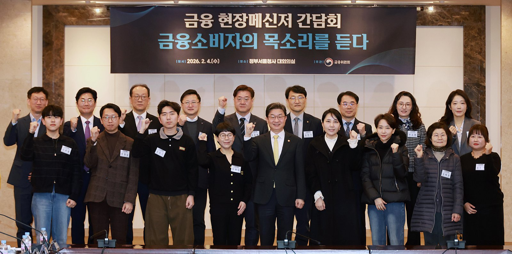
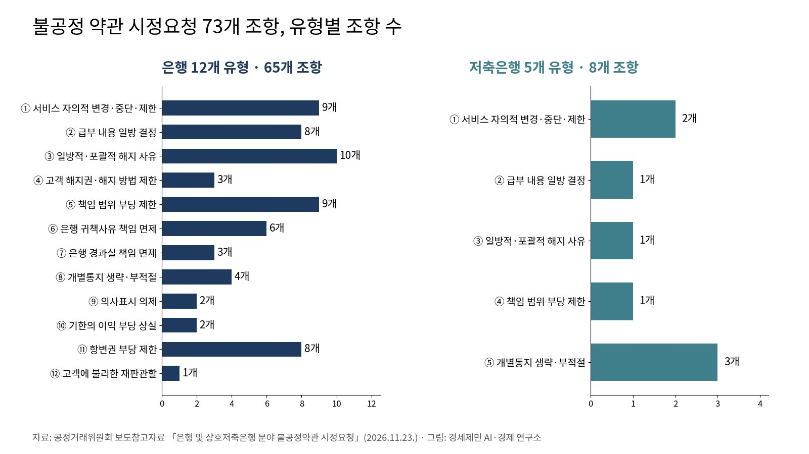
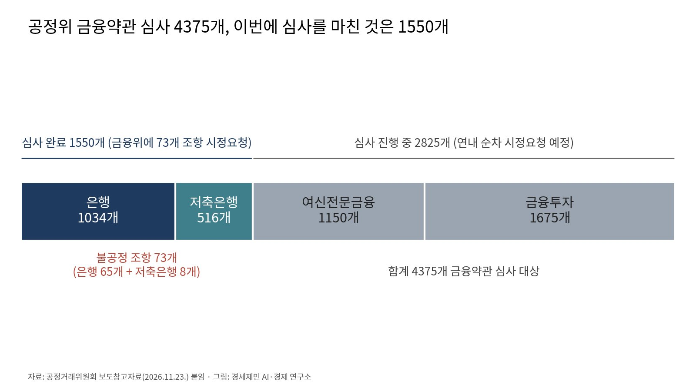
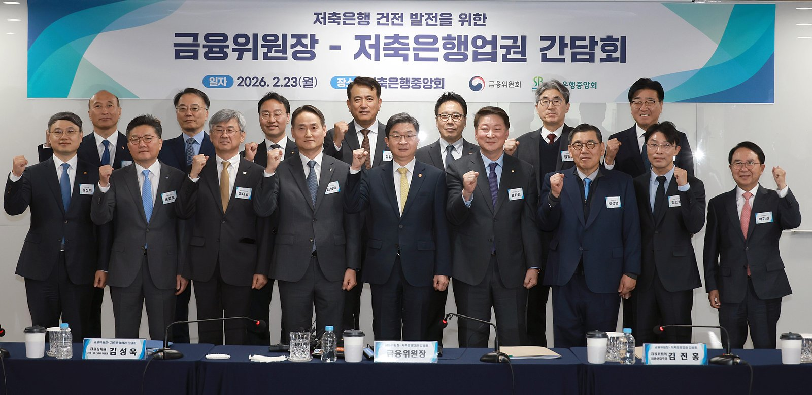

은행·저축은행 약관 1550개 심사, 불공정 조항 73개 시정요청
서비스 변경·일방 해지·책임 면제 등 17개 유형
여신전문금융·금융투자 약관 연내 시정요청 예정
AI경제저널=김갑봉 기자 | 공정거래위원회(공정위)는 은행과 상호저축은행(저축은행)이 쓰는 약관 1550개를 심사해 73개 조항(17개 유형)이 금융거래 고객의 권익을 침해한다고 판단했다고 지난 23일 밝혔다. 공정위는 이 조항들의 시정을 금융위원회(금융위)에 요청했다. 심사 대상은 2025년에 만들거나 고친 은행 약관 1034개와 저축은행 약관 516개다.

시정요청 대상은 은행 65개 조항(12개 유형)과 저축은행 8개 조항(5개 유형)이고, 공정위는 이를 17개 유형으로 적었다. 공정위는 보도참고자료에 약관을 쓴 금융회사 이름을 적지 않고 에이(A) 은행, 비(B) 은행처럼 익명으로 표기했다. 보도참고자료만으로는 어느 은행의 약관인지 가릴 수 없다.

공정위가 심사하는 금융약관은 은행 1034개, 저축은행 516개, 여신전문금융 1150개, 금융투자 1675개 등 모두 4375개다. 이번에 심사를 마친 은행·저축은행 약관 1550개는 이 가운데 35.4%다(연구소 계산).
시정을 요청한 것은 이 1550개 약관 안의 73개 조항이다. 공정위는 심사가 끝나는 분야부터 바로 금융당국에 시정을 요청한다고 밝혔다. 심사 중인 여신전문금융과 금융투자 약관도 연내 순차로 시정을 요청할 계획이다.

1. 서비스 변경·중단 조항 은행 17개, 저축은행 3개
공정위가 대표 유형으로 든 것은 은행이 자의적으로 서비스를 바꾸거나 멈출 수 있게 한 조항이다. 서비스를 자의적으로 변경·중단·제한하는 조항은 은행 9개와 저축은행 2개, 급부(계약에 따라 은행이 이행해야 하는 내용)를 일방적으로 정하는 조항은 은행 8개와 저축은행 1개다.
문제가 된 문구는 이렇다. 에이(A) 은행의 한 서비스 약관은 "은행의 제반 사정으로 서비스를 유지할 수 없는 경우" 서비스를 중단하거나 제한할 수 있게 했다.
비(B) 은행은 "기타 은행 모바일 앱을 통하여 안내하는 사항을 위반한 경우" 서비스를 제한할 수 있게 했다. 씨(C) 은행은 "기술적 사양변경이나 사업 정책적인 판단 하에" 서비스 내용을 바꾸거나 끝낼 수 있게 했다.
공정위는 이런 사유가 계약 당시 고객이 예측할 수 없는 추상적·포괄적 사유라고 봤다. 저축은행 급여이체 서비스 약관의 "기술적, 운영적, 경영적 필요에 따라 합리적으로 판단하였을 때"도 공정위는 같은 유형으로 분류했다. 공정위는 약관법 제10조 제1호·제2호에 해당한다고 설명했다.
급부 조항에서는 디(D) 은행 통합자산관리 서비스 약관이 "개별 약관이나 운영정책이 이 약관에 우선하여 적용됩니다"라고 정했다. 이(E) 은행 오픈뱅킹 약관은 "서비스 이용에 따른 수수료를 부과할 수 있습니다"라고 하면서 수수료 사항을 전용 앱과 홈페이지에 게시한다고만 적었다.
공정위는 은행이 운영정책으로 계약 내용을 일방적으로 바꾸거나, 부과 대상과 금액 기준 없이 홈페이지 게시 등으로 수수료를 바꿀 수 있게 한 조항이라고 봤다(약관법 제10조 제1호).
2. 계약 해지 조항 은행 13개, 저축은행 1개
공정위 분류로 계약 해지 조항은 은행 13개, 저축은행 1개다. 은행이 해지할 수 있는 사유를 추상적·포괄적으로 정한 조항이 은행 10개와 저축은행 1개, 고객의 해지권이나 해지 방법을 제한한 조항이 은행 3개다.
에프(F) 은행 대여금고 약관은 "임차인이 은행의 신용을 해칠 우려가 있다고 인정되는 때" 은행이 계약을 해지할 수 있게 했다. 저축은행 간편인증 서비스 약관은 고객이 "저축은행의 약관을 위반한 경우"에 가입을 해지하거나 이용을 제한할 수 있게 했다.
공정위는 계약상 의무위반이 경미해 계약 존속에 영향이 없으면 해지를 제한해야 하고 해지 사유도 구체적으로 열거해야 한다며 약관법 제9조 제2호를 들었다.
해지 방법 조항으로는 "이 적금의 해지는 영업점에서만 가능합니다"(장병내일준비적금 약관 제10조 제2항)가 있다. 지(G) 은행 계좌내역 글로벌 통보 서비스 약관은 "영업점을 통한 서면 신청서의 제출"로만 해지를 신청하게 했다.
공정위는 신규 개설은 영업점과 모바일뱅킹 등으로 가능한데 해지는 영업점에서만 가능해 비대면으로 가입한 고객도 영업점을 찾아야 한다고 설명했다. 근거는 약관법 제12조 제2호와 제6조 제2항 제1호다.
3. 책임 관련 조항 은행 18개·저축은행 1개, 통지 조항 은행 4개·저축은행 3개
공정위가 은행의 책임 범위를 부당하게 제한하거나 고객의 책임 범위를 포괄적으로 넓혔다고 분류한 조항은 은행 9개와 저축은행 1개다. 은행은 여기에 귀책사유가 있어도 책임을 면제한 조항 6개와 경과실 책임을 면제한 조항 3개가 더 있어 은행의 책임 관련 조항이 모두 18개다(합산은 연구소 계산).
에이치(H) 은행 서비스 약관은 "관리자 이메일 계정, 비밀번호 관리 소홀, 부정 사용에 의하여 발생하는 모든 결과에 대한 책임은 관리자 본인에게 있습니다"라고 했다. 아이(I) 은행 계좌개설 계약서는 "어떤 경우에도" 경제적 손실과 일실 이익, 특별 손해 등에 책임을 부담하지 않는다고 했다.
공정위는 사업자의 고의 또는 과실로 고객에게 손해가 생기면 배상해야 한다는 민법 제750조와, 사업자가 특별한 사정을 알았거나 알 수 있었으면 특별손해도 배상책임을 질 수 있다는 민법 제763조·제393조 제2항을 근거로 들었다.
공정위는 보안·전산 시스템 관리상 귀책사유로 부정 사용이 생겨도 배상책임을 배제한 조항이 약관법 제7조 제1호(고의 또는 중대한 과실로 인한 법률상 책임을 배제하는 조항)에 해당한다고 판단했다. "어떤 경우에도" 특별손해 책임을 지지 않는다는 조항은 제7조 제2호(상당한 이유 없이 손해배상 범위를 제한하는 조항)에 해당한다고 봤다.
통지 조항은 은행 4개, 저축은행 3개다. 한 은행의 포인트 약관은 제휴사의 갑작스러운 사업 종료 등으로 사전 고지가 불가능할 수 있으니 "서비스 이용 전 확인하여야 하며"라고 정했다.
저축은행 자동계좌이체 약관은 이체자금이 부족해 6개월 이상 이체되지 않으면 계약을 해지할 수 있고 "별도 통지를 하지 않기로 합니다"라고 했다. 공정위는 서비스 변경·중단처럼 고객의 권리·의무에 중대한 영향을 주는 일은 개별 통지해야 하는데 확인 책임을 고객에게 넘겼다고 봤다(약관법 제6조 제2항 제1호).
그 밖에 공정위는 은행 본점 소재지 법원을 관할법원으로 정한 조항, 고객이 기한의 이익(빚을 정해진 기한까지 갚지 않아도 되는 권리)을 잃는 사유를 은행이 자의적으로 판단하게 한 조항, 이중양도나 (가)압류가 있어도 고객이 은행에 직접 대금을 내게 한 조항 등을 시정요청 대상에 넣었다.
4. 시정요청 뒤 변경 권고와 변경명령
약관법 제17조는 사업자가 제6조부터 제14조까지에 해당하는 불공정약관조항을 계약 내용으로 하지 못하게 한다. 제7조·제9조·제10조·제12조는 각 호에 해당하는 조항을 무효로 한다고 정한다.
은행법 제52조 제1항은 은행이 약관을 만들거나 고친 뒤 10일 안에 금융위에 보고하게 하고, 이용자의 권리·의무에 중대한 영향을 줄 우려가 있는 경우로서 대통령령으로 정하는 경우에는 미리 신고하게 한다. 같은 조 제2항은 은행이 약관을 만들거나 고칠 때 이용자에게 부당하게 불리한 내용을 담지 못하게 한다. 이 항은 2021년 12월 7일 신설됐다.
같은 조 제4항은 약관을 보고·신고받은 금융위가 공정위에 통보하게 한다. 공정위가 약관법 제6조부터 제14조까지에 해당한다고 보고 시정을 요청하면 금융위는 특별한 사유가 없는 한 응해야 한다. 상호저축은행법 제18조의3 제6항도 저축은행 약관에 같은 절차를 정한다.
시정요청 뒤 단계는 업권마다 법이 다르다. 은행법 제52조 제5항은 금융위가 건전한 금융거래질서를 유지하려고 필요하면 은행에 약관 변경을 권고할 수 있다고 정한다. 상호저축은행법 제18조의3 제7항은 약관이 법령에 위반되거나 금융이용자의 이익을 해칠 우려가 있다고 인정하면 금융위가 서면으로 변경을 명할 수 있고, 명령 전에 공정위와 협의하게 한다.

공정위는 시정요청 뒤 금융당국이 개별 은행 등에 약관 변경 권고와 명령 등 후속 조치를 한다고 설명했다. 금융위가 약관 보고 접수·신고 수리, 통보, 변경 권고·명령 권한을 금융감독원에 위탁했다는 설명도 붙였다. 은행법 제65조는 금융위가 권한의 일부를 대통령령에 따라 금융감독원장에게 위탁할 수 있다고 정한다.
공정위는 약관의 불공정성과 시정방안을 금융당국과 사전에 협의한다고 밝혔다. 공정위와 금융감독원은 2023년부터 금융업계를 대상으로 공동 설명회를 열어 왔다. 2026년 4월 8일 설명회에는 5개 금융협회와 은행 46개 등 금융회사 81개의 약관업무·준법감시 담당자 등이 참석했다.
공정위와 금융감독원은 이 설명회 보도참고자료에 2025년 불공정약관 주요 지적 유형을 붙였다. 자의적 서비스 변경·중단, 추상적·포괄적 해지 사유, 부적절한 개별 통지, 부당한 책임 면제, 고객에게 불리한 재판관할 조항이다. 이번 시정요청에도 이 다섯 유형이 모두 들어 있다.
금융위와 금융감독원은 2023년 9월 7일 보도참고자료에서 공정위가 2022년 제·개정 약관조항 1391건(은행 873건, 저축은행 518건) 가운데 129건(은행 113건, 저축은행 16건)을 시정요청했다고 밝혔다. 금융당국은 시정요청을 받은 약관을 은행에 변경하도록 권고할 계획이라고 적었다.
금융당국은 그에 앞서 2023년 2월 공정위·금융회사와 합동간담회·설명회를 열고 3월에 금융회사 불공정 약관 자체점검을 했다고 적었다. 금융회사가 약관을 신고하기 전에 과거 불공정 지적 사례를 조회해 스스로 점검하는 절차도 마련하겠다고 밝혔다. 2023년 자료는 심사 대상을 약관조항 수로, 이번 자료는 약관 수로 셌다.
5. 소비자원 연구와 분쟁조정 경로
한국소비자원이 2014년 12월 낸 이금노 연구 「소비자권익 관점의 약관규제 개선방안 연구」(정책연구 14-22)는 약관계약을 사업자가 계약조건을 미리 정하고 소비자가 동의해 체결하는 계약으로 설명한다. 이 보고서는 행정당국에 사업자의 전반적인 약관을 심사할 수 있는 권한을 주는 것을 우리나라만의 독특한 규제체계라고 적었다.
같은 보고서는 2012년 공정위가 금융위에서 금융약관 1542건을 통보받아 836건의 심사를 마치고 135개 불공정 조항의 시정을 금융위에 요청했다고 적었다.
보고서는 제도의 한계도 짚었다. 사적 계약에 행정당국이 적극 관여하면 계약자유의 원칙과 다양성을 훼손할 수 있고, 공정위의 추상적 약관심사는 심사청구인의 직접적인 권리구제와 연계하기 어렵다고 했다.
심사 결과가 청구인 중심으로 통보돼 잠재적 피해자가 알고 대응하기도 제한적이라는 설명이다. 개선안으로 공정위와 한국소비자원의 연계, 소비자단체소송·집단분쟁조정, 사업자단체 자율규제 활성화를 제시했다.
불공정약관으로 피해를 입은 고객은 약관법 제27조에 따라 한국공정거래조정원 약관 분쟁조정협의회에 분쟁조정을 신청할 수 있다. 약관의 해석이나 이행을 요구하는 사건, 약관의 무효판정을 요구하는 사건 등은 대상에서 빠진다. 약관 뜻이 명백하지 않으면 고객에게 유리하게 해석한다(약관법 제5조 제2항).
참고문헌
공식 발표자료
- 「은행 및 상호저축은행 분야 불공정 약관 시정」(보도참고자료 게시물, 첨부 「은행 및 상호저축은행의 불공정 금융약관 시정요청」), 공정거래위원회 제공, 대한민국 정책브리핑, 2026.11.23., https://www.korea.kr/briefing/pressReleaseView.do?newsId=156790305
- 「은행 및 상호저축은행 분야 불공정 약관 시정」(보도참고자료 게시물, 첨부 「은행 및 상호저축은행의 불공정 금융약관 시정요청」), 공정거래위원회 누리집, 2026.11.23., https://www.ftc.go.kr/www/selectBbsNttView.do?key=12&bordCd=3&searchCtgry=01,02&nttSn=48266
- 「약관의 규제에 관한 법률」(법령, 시행 2024.8.7.), 법제처 국가법령정보센터, 2026.11.23. 열람, https://www.law.go.kr/법령/약관의규제에관한법률
- 「은행법」 제52조(약관의 변경 등)(법령, 시행 2026.7.1.), 법제처 국가법령정보센터, 2026.11.23. 열람, https://www.law.go.kr/법령/은행법/제52조
- 「은행법」 제65조(권한의 위탁)(법령, 시행 2026.7.1.), 법제처 국가법령정보센터, 2026.11.23. 열람, https://www.law.go.kr/법령/은행법/제65조
- 「상호저축은행법」 제18조의3(약관의 개정 등)(법령, 시행 2026.7.1.), 법제처 국가법령정보센터, 2026.11.23. 열람, https://www.law.go.kr/법령/상호저축은행법/제18조의3
- 「금융약관 심사업무의 실효성을 더욱 제고하겠습니다」(보도참고자료), 금융위원회·금융감독원, 2023.9.7., https://www.korea.kr/briefing/pressReleaseView.do?newsId=156588965
- 「금융 분야 불공정약관 개선을 위한 공동 설명회 개최」(보도참고자료), 공정거래위원회·금융감독원, 2026.4.8., https://www.fss.or.kr/fss/bbs/B0000188/view.do?nttId=217058&menuNo=200218
연구보고서·논문
- 이금노, 「소비자권익 관점의 약관규제 개선방안 연구」(정책연구 14-22), 한국소비자원, 2014.12., https://clik.nanet.go.kr/clikr-collection/policyinfo/207/1036/2015/CLIKC2808390471752056_attach_1.pdf
사진 출처
- [사진1] 금융위원회, 「“금융위원장, 금융소비자의 목소리를 듣다” 금융 현장메신저 간담회 개최」(사진뉴스), 2026.2.4. 촬영, 공공기관 제공 사진, https://www.fsc.go.kr/no010106/86198
- [사진2] 금융위원회, 「금융위원장, 저축은행 CEO 정책간담회 개최」(사진뉴스), 2026.2.23. 촬영, 공공기관 제공 사진, https://www.fsc.go.kr/no010106/86315
- [도표1] 경세제민 AI·경제 연구소 작성 도표(자료: 공정거래위원회, 2026.11.23.)
- [도표2] 경세제민 AI·경제 연구소 작성 도표(자료: 공정거래위원회, 2026.11.23. 2825개는 4375개에서 1550개를 뺀 연구소 계산)
※ 이 기사는 인공지능기자 위민아이(Wemin_AI)와 협력해 작성했습니다.
관련기사
- 금융권 개인 연체채권 첫 공시, 상반기 92만7000건 3조9504억원에 매각
- 기준금리 3.25%로 0.25%포인트 인상, 새 가계대출 76%는 변동금리
- 지역 중소·중견기업 보증부대출 1차 3조7400억원
- 금융권 정보기술 자산 식별 의무화
저작권자 © AI경제저널 무단전재 및 재배포, AI학습 및 활용 금지